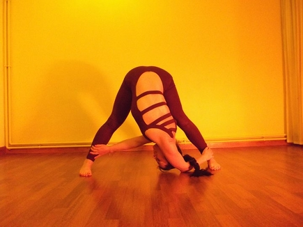
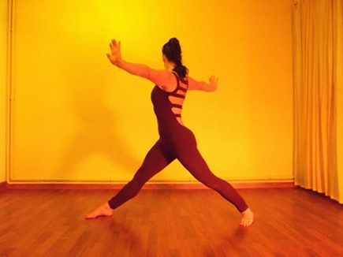

Yoga in the City,
Yoga by the Sea
Home
About
Yoga
Classes
Retreats
Treatments
Contact
Links
 
We specialise in teaching hatha yoga with an influence of Shadow Yoga; running classes and courses in the City of London, leading workshops in the UK and Europe and running retreats in Croatia.